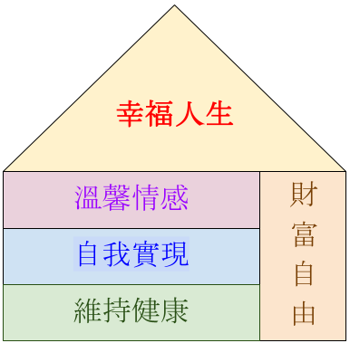
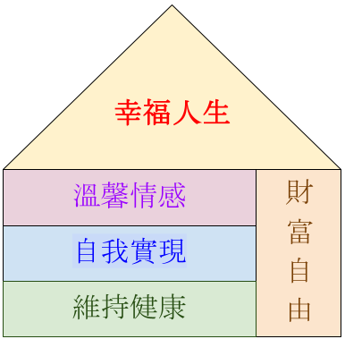

幸福人生
人生最重要的事其實很簡單，就是能經常舒心愉悅的活在當下，能從事符合你興趣的工作，能和你所關心的家人溫馨地在一起生活，能和你的好朋友愉快地互動。實現這些重要的事，應該需要先達成下列四項目標才能真正體現幸福人生：
財富自由：努力掙錢、持續累積、正確理財 溫馨情感：誠慹友情、親人關懷、家庭幸福 自我實現：學習知識、發展興趣、實現自我 維持健康：鍛鍊體魄、提升心靈、身心合一
財富自由除了努力掙錢，還要能持續累積，並且需要能正確理財。
人生最重要的事其實很簡單，就是能經常舒心愉悅的活在當下，能從事符合你興趣的工作，能和你所關心的家人溫馨地在一起生活，能和你的好朋友愉快地互動。實現這些重要的事，應該需要先達成下列四項目標才能真正體現幸福人生：
財富自由：努力掙錢、持續累積、正確理財 溫馨情感：誠慹友情、親人關懷、家庭幸福 自我實現：學習知識、發展興趣、實現自我 維持健康：鍛鍊體魄、提升心靈、身心合一
財富自由除了努力掙錢，還要能持續累積，並且需要能正確理財。